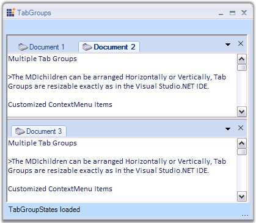

TabbedMDIManager supports multiple TabGroups which can be resizable. It allows users to programmatically control and restrict the number and layout of the tab groups and also lets users to associate a form with a specific tab group. This way users can provide a custom tabbed layout for the end users of the TabbedMDI application. The MDI Children can arranged horizontally or vertically.

Figure 1091: TabGroups with MDI Children in a Single Form
The below topics will guide you on how to create tab groups and set borders for the tab groups.
 Creating Tab Groups
Creating Tab Groups